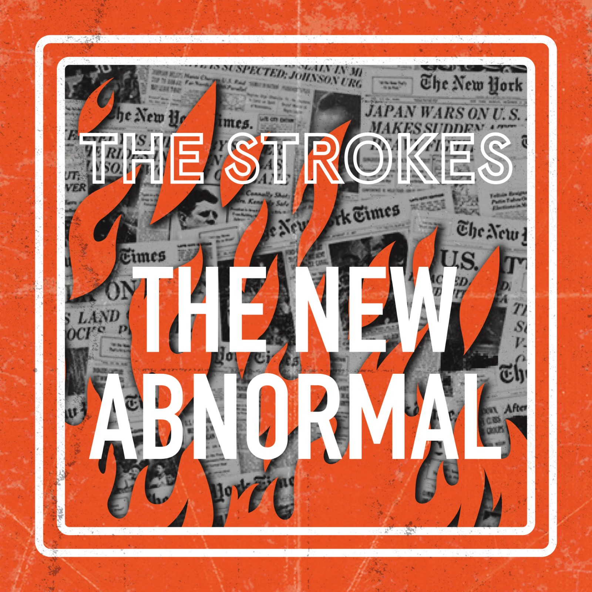
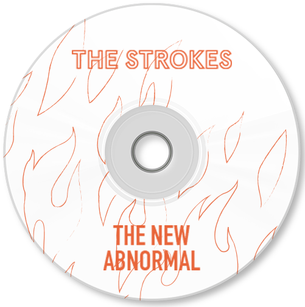

Les sauveurs du rock sont de retour avec un ultime album:
The New Abnormal.
Retrouvez la célèbre voix de Casablanca, accompagnée de
son quatuor iconique,
dans ceux qui sont déjà des incontournables du rock
garage : “At the Door”,
“Brooklyn Bridge To Chorus” ou encore “Bad Décisions”.
The New Abnormal : neuf titres pour un moment unique, les
Strokes
comme on ne les avait plus vus depuis un moment.
Alors n’attendez plus et cliquez sur le titre de votre choix pour l’écouter tout de suite !
Disponible sur toutes les plateformes de téléchargements.
1.
The Adults Are Talking
2.
Selfless
3.
Brooklyn Bridge To Chorus
4.
Bad Decisions
5.
Eternal Summer
6.
At The Door
7.
Why Are Sundays So Depressing
8.
Not The Same Anymore
9.
Ode To The Mets